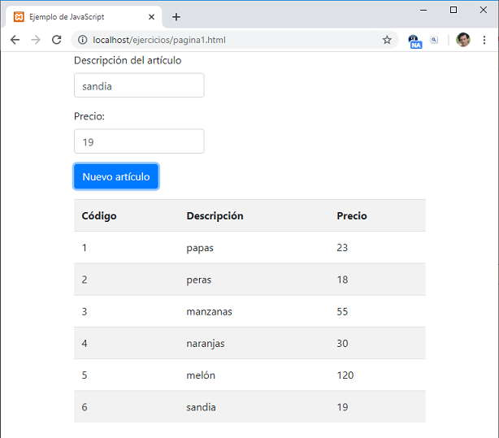

Listado completo de tutoriales
ES6 - API fetch (enviar datos de un formulario) |
Hemos visto en varios de los conceptos anteriores como recuperar datos con distintos formatos de un servidor web. Ahora veremos que el API fetch también nos sirve para enviar datos a un servidor web.
Implementaremos una aplicación para cargar en un formulario HTML la descripción y precio de un artículo y al presionar un botón se envíen dichos datos al servidor web.
Almacenaremos los datos en una base de datos, además implementaremos algo que ya conocemos que es la recuperación de datos de los artículos mediante una petición fetch al servidor.
El resultado final de la página es el formulario para la carga de artículos y una tabla HTML con todos los datos que se almacenan en el servidor:

<!DOCTYPE html>
<html>
<head>
<title>Ejemplo de JavaScript</title>
<meta charset="UTF-8">
<link rel="stylesheet" href="https://stackpath.bootstrapcdn.com/bootstrap/4.3.1/css/bootstrap.min.css">
</head>
<body>
<div class="container h-100">
<div class="row">
<form id="formulario1">
<div class="form-group">
<label for="descripcion">Descripción del artículo</label>
<input type="text" class="form-control" id="descripcion" name="descripcion" required>
</div>
<div class="form-group">
<label for="precio">Precio:</label>
<input type="number" class="form-control" id="precio" name="precio" required>
</div>
<div class="form-group">
<button type="button" id="boton1" class="btn btn-primary">Nuevo artículo</button>
</div>
</form>
<table class="table table-striped" id="tabla1">
</table>
</div>
</div>
<script>
listarArticulos();
document.getElementById("boton1").addEventListener("click", () => agregar());
function agregar() {
const datos = new URLSearchParams(new FormData(document.getElementById("formulario1")));
fetch('nuevoarticulo.php', {
method: 'POST',
body: datos
})
.then(response => response.json())
.then(datos => listarArticulos());
}
function listarArticulos() {
fetch("listadoarticulos.php")
.then(response => response.json())
.then(datos => {
let cad = '<tr><th>Código</th><th>Descripción</th><th>Precio</th></tr>';
for (let articulo of datos) {
cad += `<tr><td>${articulo.codigo}</td>
<td>${articulo.descripcion}</td>
<td>${articulo.precio}</td></tr>`;
}
document.getElementById("tabla1").innerHTML = cad;
});
}
</script>
</body>
</html>
Creamos un formulario HTML donde se permite la carga de la descripción de un artículo y su precio, además definimos una marca 'button':
<div class="row">
<form id="formulario1">
<div class="form-group">
<label for="descripcion">Descripción del artículo</label>
<input type="text" class="form-control" id="descripcion" name="descripcion" required>
</div>
<div class="form-group">
<label for="precio">Precio:</label>
<input type="number" class="form-control" id="precio" name="precio" required>
</div>
<div class="form-group">
<button type="button" id="boton1" class="btn btn-primary">Nuevo artículo</button>
</div>
</form>
Definimos una tabla HTML vacía que la generaremos en forma dinámica cuando carguemos la página y cada vez que se ingrese un nuevo artículo:
<table class="table table-striped" id="tabla1">
</table>
Inmediatamente se encuentra cargada la página en el navegador procedemos a llamar a la función listarArticulos:
listarArticulos();
document.getElementById("boton1").addEventListener("click", () => agregar());
La función listarArticulos contiene un algoritmo que ya vimos en conceptos anteriores, donde mediante la llamada al método 'fetch' recuperamos un recurso en formato JSON con todos los datos de la tabla 'articulos' que se encuentra en el servidor:
function listarArticulos() {
fetch("listadoarticulos.php")
.then(response => response.json())
.then(datos => {
let cad = '<tr><th>Código</th><th>Descripción</th><th>Precio</th></tr>';
for (let articulo of datos) {
cad += `<tr><td>${articulo.codigo}</td>
<td>${articulo.descripcion}</td>
<td>${articulo.precio}</td></tr>`;
}
document.getElementById("tabla1").innerHTML = cad;
});
}
Lo nuevo se presenta cuando capturamos el click del botón de 'Nuevo artículo', donde llamamos al método fetch configurando el segundo parámetro de tal forma que se adjunten en la petición al servidor los datos almacenados en el formulario:
function agregar() {
const datos = new URLSearchParams(new FormData(document.getElementById("formulario1")));
fetch('nuevoarticulo.php', {
method: 'POST',
body: datos
})
.then(response => response.json())
.then(datos => listarArticulos());
}
El segundo parámetro del método fetch debe ser un objeto literal con la configuración de las propiedades 'method' y 'body'.
En los ejercicios anteriores no es necesario pasar este objeto ya que se encuentran configurados datos por defecto, el resultado es lo mismo si en el listadoArticulos pasamos la propiedad 'method' con el valor "GET":
function listarArticulos() {
fetch("listadoarticulos.php",{
method:"GET"
})
......
Cuando se envían datos al servidor debemos configurar las propiedades 'method' con el valor 'GET' y la propiedad 'body' con un objeto 'URLSearchParams' que además recibe en el constructor la referencia de un objeto 'FormData'.
Para poder probar en forma local debemos tener los dos archivos PHP y creada la base de datos:
listadoarticulos.php
<?php
$server = "localhost";
$usuario = "root";
$clave = "";
$base = "base1";
$con = mysqli_connect($server, $usuario, $clave, $base) or die("problemas");
mysqli_set_charset($con, 'utf8');
$datos = mysqli_query($con, "select codigo,descripcion,precio from articulos");
$resultado = mysqli_fetch_all($datos, MYSQLI_ASSOC);
echo json_encode($resultado);
?>
Y por otro lado tenemos la página que contiene el algoritmo que almacena los datos del artículo en el servidor:
nuevoarticulo.php
<?php
header('Content-Type: application/json');
$server = "localhost";
$usuario = "root";
$clave = "";
$base = "base1";
$con = mysqli_connect($server, $usuario, $clave, $base) or die("problemas");
mysqli_set_charset($con, 'utf8');
mysqli_query($con, "insert into articulos(descripcion,precio) values
('$_REQUEST[descripcion]',$_REQUEST[precio])");
echo '{"resultado":"Ok"}';
?>